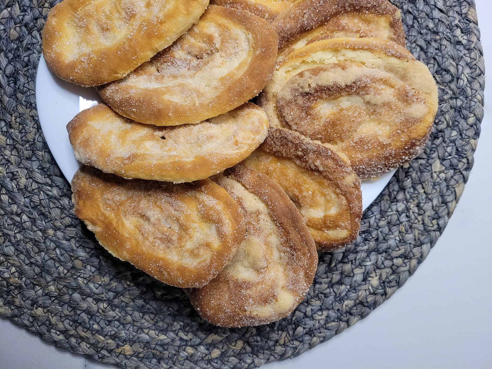
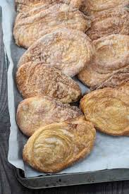
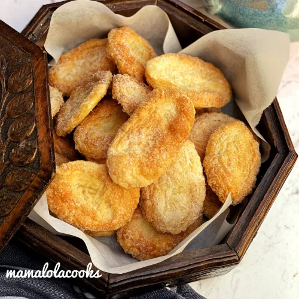
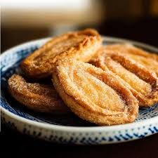
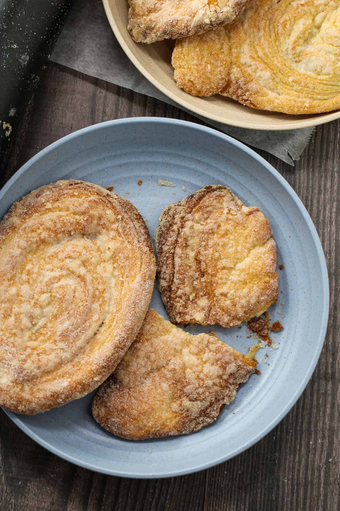

Otap





History
Ang Otap ay isang iconic Filipino pastry na nagmula sa Visayas, partikular sa Cebu. Isa itong flaky, layered cookie na hango sa European puff pastry techniques pero inangkop sa lokal na panlasa. Kilala ito sa light, crispy texture at tamang tamis, kaya naging popular bilang pasalubong at merienda sa buong bansa. Sa paglipas ng panahon, ang Otap ay simbolo ng Cebuano baking tradition at craftsmanship, na pinapakita ang dedication sa paggawa ng quality pastries.
Ingredients & Notes
All-purpose flour
Butter
Sugar
Egg whites
Vanilla extract
Price
₱15